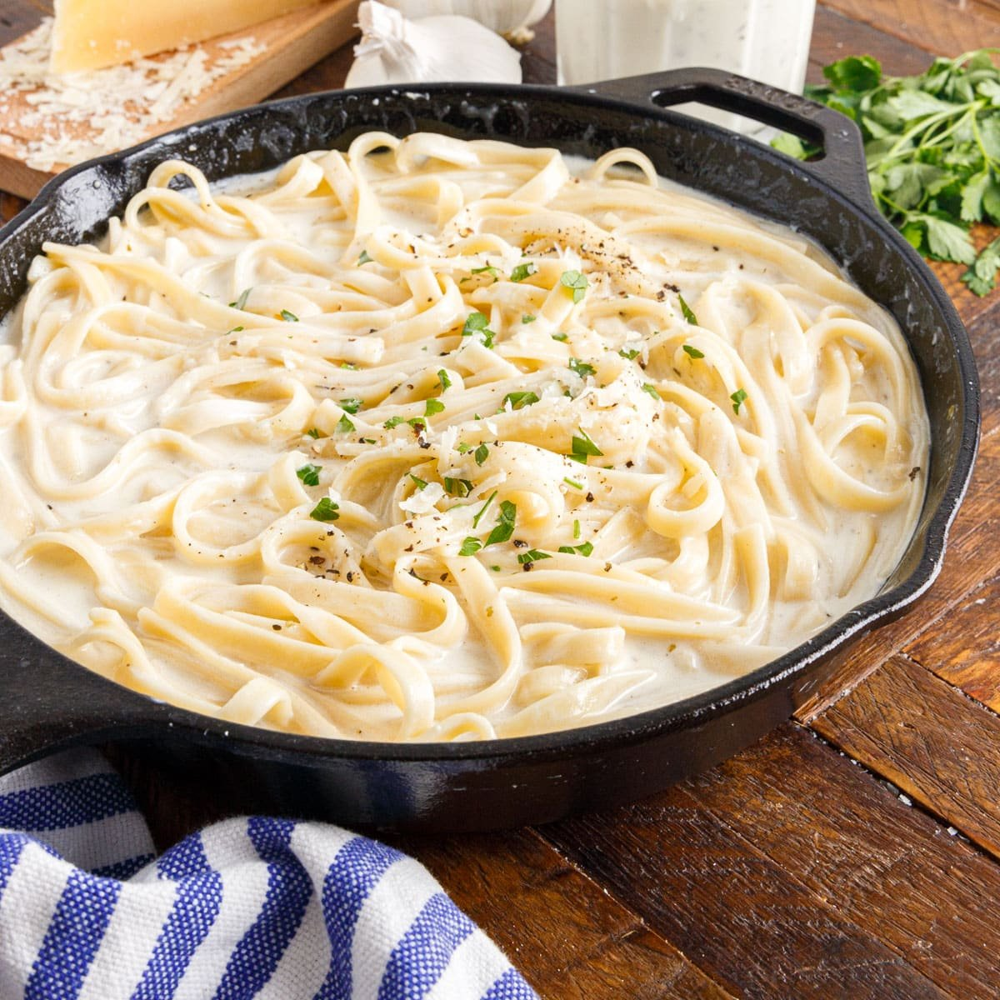

Fettuccine Alfredo

Fettuccine Alfredo is pure indulgence on a plate—tender ribbons of pasta cloaked in a silky,
velvety sauce made from real butter, heavy cream, and freshly grated Parmesan that melts into a rich,
luscious coating with just the right amount of cling. Each bite is creamy, buttery perfection, the noodles
slipping through the fork with a soft, luxurious texture, while the sauce delivers a warm, nutty depth and a
salty kiss from the cheese. Finished with a crack of black pepper and maybe a sprinkle of fresh parsley, it's
the kind of dish that feels like a quiet escape into decadence—simple, elegant, and utterly irresistible.
Ingredients
- 24 ounces dry fettuccine pasta
- 1 cup butter
- 3/4 pint heavy cream
- salt and pepper to taste
- 1 dash garlic salt
- 3/4 cup grated Romano cheese
- 1/2 cup grated Parmesan cheese
Directions
- Prepare Ingredients.
-
Bring a large pot of lightly salted water to a boil. Add fettuccine pasta and cook
for 8 to 10 minutes or until al dente; drain.
-
Melt butter into cream in a large saucepan over low heat; add salt, pepper,
and garlic salt.
- Increase the heat to medium; stir in grated Romano and Parmesan cheese until melted and sauce has thickened.
- Add cooked pasta to sauce and toss until thoroughly coated; serve immediately.